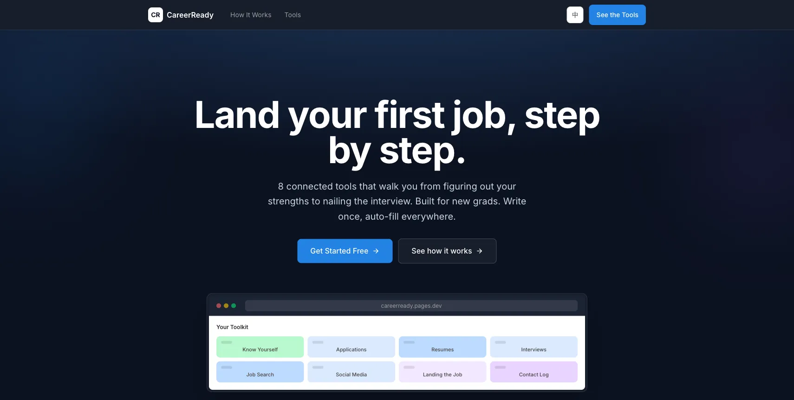
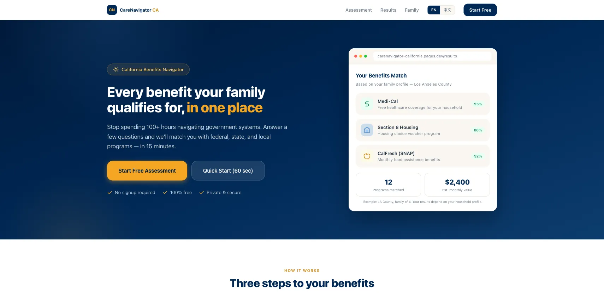
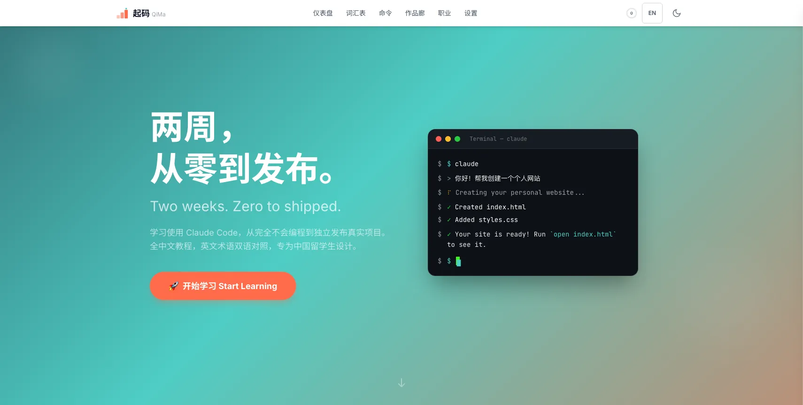
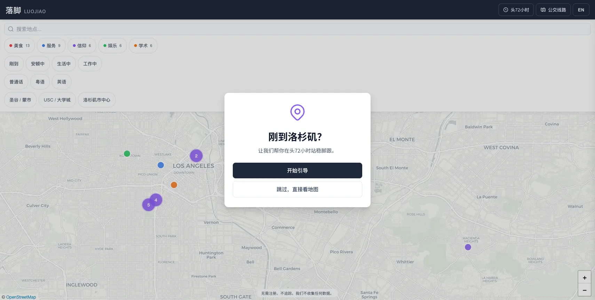

// Hello, I'm
const developer = "AI Application Developer";
Bilingual · 42 Shipped Apps · Claude Code
Educator turned AI developer
I taught in multilingual classrooms across the US and China for 17 years. Then I picked up Claude Code and shipped 42 web apps — for international students, churches, and communities I'm part of.
I speak English, Mandarin, and Cantonese. I think like a teacher, so I build apps that are clear and easy to pick up. I'm looking for a team where I can keep building things that help people.
4 apps I built from scratch




38 more apps, all deployed or on GitHub
Available for full-time, contract, or freelance work